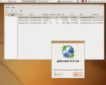

projects using libtorrent
These are some of the public projects that uses libtorrent. If you want your project listed here, let me know.
electric sheep electric sheep is a screensaver which collectively generates animations and lets the users vote which one to live on. |

|
qBittorrent qBittorrent is a QT bittorrent client available for linux (likely portable to most other desktops as well). Written by Christophe Dumez. |

|
btg btg is a unix bittorrent client which is run as a daemon. It has multiple user interfaces which connects to the daemon. One GUI (Gtkmm), one terminal interface (ncurses) and one web interface (accessable through a web browser). Written by Michael Wojciechowski and Johan Ström. |

|
BitRocket BitRocket is a MacOS X bittorrent client. |

|
Acquasition Acquasition is a multi-network peer-to-peer client for Mac. |

|
Instant Media IM is a client for downloading Internet TV. |

|
MooPolice MooPolice is a windows bittorrent client with a quite unique look. |

|
BitsCast RSS reader, podcast subscriber, video feed downloader, bittorrent feed downloader. See BitsCast homepage for more info. |

|
BitSlug BitSlug is a MacOSX cocoa client. |

|
BitBuddy BitBuddy is a windows bittorrent client by Daniel Wang, quite similar to BitComet GUI-wise. |

|
Arctic Torrent Arctic Torrent is a light-weight bittorrent client for windows. Written by Cory Nelson. |

|
deluge torrent deluge Torrent is a more full-featured yet still lightweight bittorrent client. It has the ability to automatically resume partial downloads and background to the system tray. |
 |
halite BitTorrent Halite is a windows bittorrent client controllabel via an xml-rpc interface. |

|
ZipTorrent ZipTorrent is another windows bittorrent client with decentralized search facility. |

|
Jamplayer Jamplayer is a remote controlled music player and downloader using the jamendo music network. |
|
FireANT FireANT is a video blog available for Windows and Mac OSX. |
|
eDonkey 2000 eDonkey2000 comes bundled with a bittorrent plugin by 'The Orphan'. |
|
pHoeniX pHoeniX is an eMule mod supporting, among other things, bittorrent. |